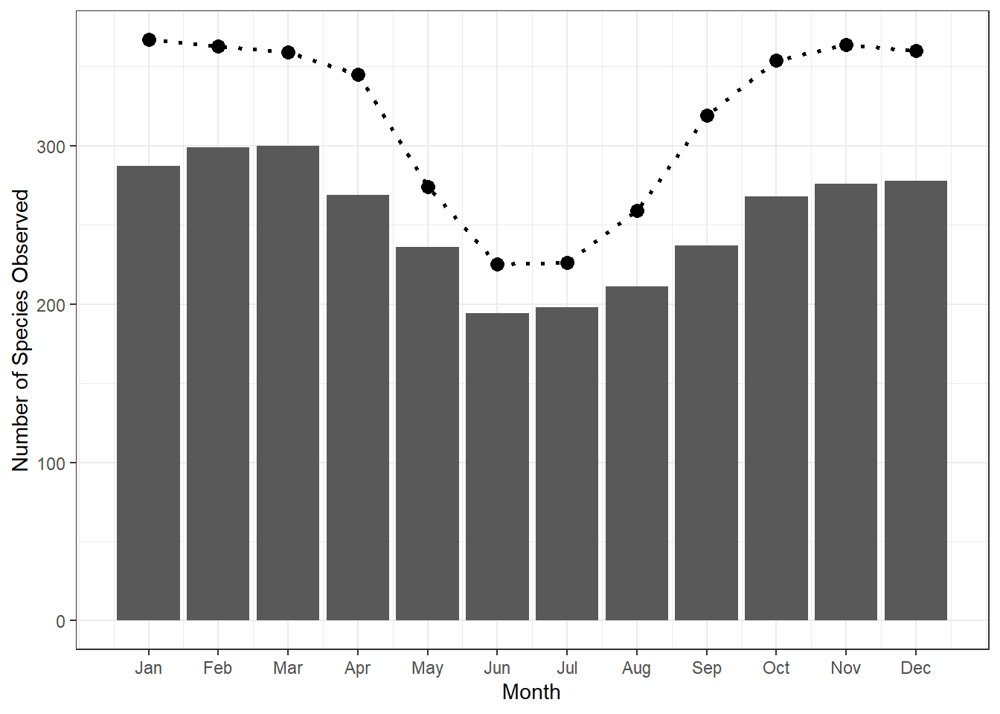

library(tidyverse)
library(readxl)
library(sf)
library(ggpubr)
library(geodata)Code & Analysis for AEN Manuscript
sightings <- read_csv("Data/observations-470688.csv") %>%
drop_na(taxon_species_name)Rows: 196736 Columns: 40
── Column specification ────────────────────────────────────────────────────────
Delimiter: ","
chr (23): observed_on_string, time_observed_at, time_zone, user_login, user...
dbl (10): id, user_id, num_identification_agreements, num_identification_di...
lgl (6): sound_url, captive_cultivated, private_place_guess, private_latit...
date (1): observed_on
ℹ Use `spec()` to retrieve the full column specification for this data.
ℹ Specify the column types or set `show_col_types = FALSE` to quiet this message.aus_all <- read_sf("Data/australia_all.gpkg") %>%
st_transform(crs = 3112)
aus_main <- read_sf("Data/australia_main.gpkg") %>%
st_transform(crs = 3112)
all_maps <- lapply(list.files(path = "Data/408sp/", pattern = ".shp$",
full.names = TRUE), read_sf)
if (!file.exists("Data/map_area.gpkg")) {
map_area <- do.call(rbind, all_maps) %>%
st_union() %>%
st_transform(crs = 3112) %>%
st_as_sf() %>%
mutate(area = st_area(.)) %>%
filter(area == max(area)) %>%
select(-area)
write_sf(map_area, "Data/map_area.gpkg")
} else {
map_area <- read_sf("Data/map_area.gpkg")
}
if (!file.exists("Data/map_buffer.gpkg")) {
map_buffer <- st_buffer(map_area, 1e4)
write_sf(map_buffer, "Data/map_buffer.gpkg")
} else {
map_buffer <- read_sf("Data/map_buffer.gpkg")
}
master_list <- read_xlsx("Data/MasterSheet.xlsx")for (i in 1:nrow(master_list)) {
ScientificName <- master_list$ScientificName[i]
AFD_species <- master_list$AFD_ScientificName[i]
iNat_species <- master_list$iNat_ScientificName[i]
Braby_species <- master_list$Braby2016_ScientificName[i]
Map_species <- master_list$BA_MapNumber[i]
if (str_detect(iNat_species, " OR ")) {
iNat_species <- str_split_1(iNat_species, " OR ")
}
sightings_species <- sightings %>%
filter(taxon_species_name %in% iNat_species) %>%
st_as_sf(coords = c("longitude", "latitude"), crs = 4326, remove = FALSE) %>%
st_transform(crs = 3112) %>%
mutate(month = month(observed_on),
in_buffer = as.logical(st_intersects(
., map_buffer, sparse = FALSE)))
if (!is.na(Map_species)) {
range_species <- read_sf(paste0("Data/408sp/butterflies_australia_Id_sp_", Map_species, ".shp")) %>%
st_transform(crs = 3112) %>%
st_union()
sightings_species <- sightings_species %>%
mutate(distance = as.numeric(st_distance(., range_species)))
} else {
range_species <- aus_all %>%
st_cast("MULTILINESTRING")
sightings_species <- sightings_species %>%
mutate(distance = NA)
}
if (nrow(sightings_species) == 0) {
fullrange_species <- st_bbox(range_species)
} else {
fullrange_species <- st_bbox(st_union(st_as_sfc(st_bbox(sightings_species)), st_as_sfc(st_bbox(range_species))))
}
long_edge <- max(c(fullrange_species[3] - fullrange_species[1], fullrange_species[4] - fullrange_species[2]))
midpoint_x <- mean(fullrange_species[c(1, 3)])
midpoint_y <- mean(fullrange_species[c(2, 4)])
fullrange_species[1] <- midpoint_x - 0.5 * long_edge
fullrange_species[2] <- midpoint_y - 0.5 * long_edge
fullrange_species[3] <- midpoint_x + 0.5 * long_edge
fullrange_species[4] <- midpoint_y + 0.5 * long_edge
rm(long_edge, midpoint_x, midpoint_y)
plot1 <- ggplot() +
geom_sf(data = aus_all, fill = "grey95") +
geom_sf(data = range_species, fill = "grey75") +
geom_sf(data = filter(sightings_species, distance == 0, in_buffer == TRUE),
colour = "darkgreen") +
geom_sf(data = filter(sightings_species, distance > 0, distance < 1e5,
in_buffer == TRUE), colour = "orange") +
geom_sf(data = filter(sightings_species, distance >= 1e5, in_buffer == TRUE),
colour = "red") +
geom_sf(data = filter(sightings_species, in_buffer == FALSE),
colour = "grey50") +
theme_bw() +
lims(x = fullrange_species[c(1, 3)],
y = fullrange_species[c(2, 4)]) +
theme(axis.ticks = element_blank(),
axis.text = element_blank()) +
labs(title = paste0(AFD_species, " / ", paste(iNat_species, collapse = " OR "), " / ", Braby_species, "\n",
nrow(sightings_species), " observations"))
plot2 <- ggplot() +
geom_segment(aes(x = 0.5, xend = 12.5, y = 0, yend = 0)) +
geom_bar(data = sightings_species, aes(x = month, y = ..count..), width = 1) +
geom_bar(data = sightings_species, aes(x = month, y = -..count..), width = 1) +
# geom_vline(xintercept = seq(0.5, 12.5, by = 1), colour = "white", linewidth = 2) +
scale_x_continuous(limits = c(0.5, 12.5)) +
theme_void()
plot <- ggarrange(plot1, plot2, ncol = 1, nrow = 2, heights = c(0.85, 0.15)) +
bgcolor("white") +
border("white")
ggsave(filename = paste0("Butterfly Plots/", i, ".png"),
plot = plot, width = 6, height = 8)
species_info <- sightings_species %>%
st_drop_geometry() %>%
summarise(ScientificName = ScientificName,
NObservations = n(),
ObservationsInBuffer = sum(in_buffer == TRUE),
FrequencyInBuffer = mean(in_buffer),
ObservationsInRange = sum(distance == 0),
FrequencyInRange = mean(distance == 0),
ObservationsTrueOut = sum(in_buffer == TRUE & distance > 1e5),
FrequencyTrueOut = ObservationsTrueOut / NObservations,
MaxDistance = max(distance),
MeanOutDistance = mean(distance[distance > 0]),
JulObservations = sum(month == 7),
AugObservations = sum(month == 8),
SepObservations = sum(month == 9),
OctObservations = sum(month == 10),
NovObservations = sum(month == 11),
DecObservations = sum(month == 12),
JanObservations = sum(month == 1),
FebObservations = sum(month == 2),
MarObservations = sum(month == 3),
AprObservations = sum(month == 4),
MayObservations = sum(month == 5),
JunObservations = sum(month == 6),
ObservationMonths = n_distinct(month)) %>%
left_join(filter(master_list, row_number() == i), ., by = "ScientificName") %>%
mutate(JulNew = Jul * JulObservations != JulObservations,
AugNew = Aug * AugObservations != AugObservations,
SepNew = Sep * SepObservations != SepObservations,
OctNew = Oct * OctObservations != OctObservations,
NovNew = Nov * NovObservations != NovObservations,
DecNew = Dec * DecObservations != DecObservations,
JanNew = Jan * JanObservations != JanObservations,
FebNew = Feb * FebObservations != FebObservations,
MarNew = Mar * MarObservations != MarObservations,
AprNew = Apr * AprObservations != AprObservations,
MayNew = May * MayObservations != MayObservations,
JunNew = Jun * JunObservations != JunObservations,
NewMonths = sum(JulNew, AugNew, SepNew, OctNew, NovNew, DecNew,
JanNew, FebNew, MarNew, AprNew, MayNew, JunNew))
season <- master_list %>%
filter(row_number() == i) %>%
select(10:21) %>%
t() %>%
as.data.frame() %>%
rownames_to_column("Month") %>%
filter(V1 == TRUE) %>%
pull(Month)
sightings_species <- sightings_species %>%
mutate(AFD_ScientificName = AFD_species,
ScientificName = ScientificName,
in_range = distance == 0,
in_season = month.abb[month] %in% season)
if (i == 1) {
species_summary <- species_info
sightings_processed <- sightings_species
} else {
species_summary <- bind_rows(species_summary, species_info)
sightings_processed <- bind_rows(sightings_processed, sightings_species)
}
# print(i)
}yeardata <- sightings_processed %>%
st_drop_geometry() %>%
mutate(ObsYear = year(observed_on), UpYear = year(created_at))
yeardata <- reduce(
list(
yeardata %>%
group_by(ScientificName) %>%
summarise(ObsYear = min(ObsYear), UpYear = min(UpYear)) %>%
group_by(ObsYear) %>%
summarise(NSpecies = n()) %>%
rename(Year = ObsYear) %>%
arrange(Year) %>%
mutate(CumObsSpecies = cumsum(NSpecies)) %>%
filter(Year >= 2015) %>%
select(-NSpecies),
yeardata %>%
group_by(ScientificName) %>%
summarise(ObsYear = min(ObsYear), UpYear = min(UpYear)) %>%
group_by(UpYear) %>%
summarise(NSpecies = n()) %>%
rename(Year = UpYear) %>%
arrange(Year) %>%
mutate(CumUpSpecies = cumsum(NSpecies)) %>%
filter(Year >= 2015) %>%
select(-NSpecies),
yeardata %>%
group_by(ObsYear) %>%
summarise(ObsSpecies = n_distinct(ScientificName)) %>%
rename(Year = ObsYear) %>%
filter(Year >= 2015),
yeardata %>%
group_by(UpYear) %>%
summarise(UpSpecies = n_distinct(ScientificName)) %>%
rename(Year = UpYear) %>%
filter(Year >= 2015)
), left_join
)plot1a <- species_summary %>%
mutate(log_groups = cut(
NObservations,
breaks = c(-1, 0, 1, 10, 100, 1000, 10000, 100000),
labels = c("0", "1", "2-10", "11-100", "101-1000", "1001-10000", "10001+"))) %>%
group_by(log_groups) %>%
summarise(NSpecies = n(),
FreqSpecies = paste0(100 * signif(NSpecies / nrow(species_summary), 2), "%")) %>%
ggplot() +
geom_bar(aes(x = log_groups, y = NSpecies), stat = "identity") +
geom_text(aes(x = log_groups, y = NSpecies, label = FreqSpecies), stat = "identity", vjust = -0.5, size = 3) +
labs(x = "Number of Observations", y = "Count of Species") +
theme_bw()
plot1aplot1b <- sightings_processed %>%
st_drop_geometry() %>%
mutate(Year = if_else(year(observed_on) < 2015, 2015, year(observed_on))) %>%
group_by(Year) %>%
summarise(NObservations = n(),
FreqObservations = paste0(100 * signif(NObservations / nrow(sightings_processed), 2), "%")) %>%
ggplot() +
geom_bar(aes(x = Year, y = NObservations), stat = "identity") +
geom_text(aes(x = Year, y = NObservations, label = FreqObservations), stat = "identity", vjust = -0.5, size = 3) +
labs(x = "Year", y = "Count of Observations") +
scale_x_continuous(breaks = c(2015, 2018, 2021, 2024),
labels = c("(pre-)2015", 2018, 2021, 2024)) +
theme_bw()
# plot1b <- species_summary %>%
# group_by(ObservationMonths) %>%
# summarise(NSpecies = n(),
# FreqSpecies = paste0(100 * signif(NSpecies / nrow(species_summary), 2), "%")) %>%
# ggplot() +
# geom_bar(aes(x = ObservationMonths, y = NSpecies), stat = "identity") +
# geom_text(aes(x = ObservationMonths, y = NSpecies, label = FreqSpecies), stat = "identity", vjust = -0.5, size = 3) +
# labs(x = "Number of Months Observed In", y = "Count of Species") +
# scale_x_continuous(breaks = 0:12) +
# theme_bw()
plot1bplot1c <- sightings_processed %>%
group_by(month) %>%
summarise(NSpecies = n_distinct(ScientificName)) %>%
ggplot() +
geom_bar(aes(x = month, y = NSpecies), stat = "identity") +
geom_line(data = master_list %>% select(16:21, 10:15) %>% colSums(na.rm = TRUE) %>% as.data.frame() %>% rename(NSpecies = ".") %>% mutate(Month = row_number()),
aes(x = Month, y = NSpecies), linetype = "dotted", linewidth = 1) +
geom_point(data = master_list %>% select(16:21, 10:15) %>% colSums(na.rm = TRUE) %>% as.data.frame() %>% rename(NSpecies = ".") %>% mutate(Month = row_number()),
aes(x = Month, y = NSpecies), size = 3) +
labs(x = "Month", y = "Number of Species Observed") +
scale_x_continuous(breaks = 1:12, labels = month.abb) +
theme_bw()
plot1c
plot1d <- sightings_processed %>%
group_by(month) %>%
summarise(NObservations = n(),
FreqObservations = paste0(100 * signif(NObservations / nrow(sightings_processed), 2), "%")) %>%
ggplot() +
geom_bar(aes(x = month, y = NObservations), stat = "identity") +
geom_text(aes(x = month, y = NObservations, label = FreqObservations), stat = "identity", vjust = -0.5, size = 3) +
labs(x = "Month", y = "Number of Observations") +
scale_x_continuous(breaks = 1:12, labels = month.abb) +
theme_bw()
plot1dplot1e <- yeardata %>%
ggplot(., aes(x = Year)) +
geom_line(aes(y = CumObsSpecies), linetype = "dashed", linewidth = 1, colour = "darkred") +
geom_line(aes(y = CumUpSpecies), linetype = "dashed", linewidth = 1, colour = "darkblue") +
geom_point(aes(y = CumObsSpecies), size = 3, colour = "darkred") +
geom_point(aes(y = CumUpSpecies), size = 3, colour = "darkblue") +
geom_hline(yintercept = nrow(master_list),
linetype = "dotted", linewidth = 1) +
lims(y = c(0, 460)) +
scale_x_continuous(breaks = c(2015, 2018, 2021, 2024),
labels = c("(pre-)2015", 2018, 2021, 2024)) +
labs(x = "Year", y = "Count of Species") +
theme_bw()
plot1eplot1f <- yeardata %>%
ggplot(., aes(x = Year)) +
geom_line(aes(y = ObsSpecies), linetype = "dashed", linewidth = 1, colour = "darkred") +
geom_line(aes(y = UpSpecies), linetype = "dashed", linewidth = 1, colour = "darkblue") +
geom_point(aes(y = ObsSpecies), size = 3, colour = "darkred") +
geom_point(aes(y = UpSpecies), size = 3, colour = "darkblue") +
geom_hline(yintercept = nrow(master_list),
linetype = "dotted", linewidth = 1) +
lims(y = c(0, 460)) +
scale_x_continuous(breaks = c(2015, 2018, 2021, 2024),
labels = c(2015, 2018, 2021, 2024)) +
labs(x = "Year", y = "Count of Species") +
theme_bw()
plot1fplot1 <- ggarrange(plot1a, plot1b, plot1c, plot1d, plot1e, plot1f,
ncol = 2, nrow = 3, align = "hv", labels = "AUTO", hjust = -2.5)
ggsave(filename = "plot1.png", plot = plot1, width = 12, height = 8)
plot2a <- species_summary %>%
mutate(groups = cut(
FrequencyInRange, include.lowest = TRUE,
breaks = seq(0, 1, by = 0.1),
labels = c("0-10%", "10-20%", "20-30%", "30-40%", "40-50%",
"50-60%", "60-70%", "70-80%", "80-90%", "90-100%"))) %>%
group_by(groups) %>%
summarise(NSpecies = n(),
FreqSpecies = paste0(100 * signif(NSpecies / nrow(species_summary), 2), "%")) %>%
ggplot() +
geom_bar(aes(x = groups, y = NSpecies), stat = "identity") +
geom_text(aes(x = groups, y = NSpecies, label = FreqSpecies), stat = "identity", vjust = -0.5, size = 3) +
labs(x = "Proportion of Observations in Mapped Range", y = "Count of Species") +
scale_y_continuous(breaks = c(0, 100, 200)) +
theme_bw()
plot2aplot2b <- sightings_processed %>%
filter(distance != 0) %>%
st_drop_geometry() %>%
mutate(groups = cut(
distance,
breaks = c(0, 1e3, 1e4, 1e5, 1e6, 1e7),
labels = c("0-1km", "1-10km", "10-100km", "100-1000km", "1000+ km"))) %>%
group_by(groups) %>%
summarise(NObservations = n(),
FreqObservations = paste0(100 * signif(NObservations / nrow(sightings_processed), 2), "%"),
NTawnyCoster = sum(ScientificName == "Acraea terpsicore")) %>%
ggplot() +
geom_bar(aes(x = groups, y = NObservations), stat = "identity") +
geom_text(aes(x = groups, y = NObservations, label = FreqObservations), stat = "identity", vjust = -0.5, size = 3) +
geom_bar(aes(x = groups, y = NTawnyCoster), stat = "identity", fill = "orange1", alpha = 0.75) +
labs(x = "Distance from Mapped Range", y = "Number of Observations") +
theme_bw()
plot2bplot2c <- species_summary %>%
mutate(groups = cut(
MaxDistance,
breaks = c(-1, 0, 1e3, 1e4, 1e5, 1e6, 1e7),
labels = c("In Range", "0-1km", "1-10km", "10-100km", "100-1000km", "1000+ km"))) %>%
group_by(groups) %>%
summarise(NSpecies = n(),
FreqSpecies = paste0(100 * signif(NSpecies / nrow(species_summary), 2), "%")) %>%
ggplot() +
geom_bar(aes(x = groups, y = NSpecies), stat = "identity") +
geom_text(aes(x = groups, y = NSpecies, label = FreqSpecies), stat = "identity", vjust = -0.5, size = 3) +
labs(x = "Maximum Distance from Mapped Range", y = "Count of Species") +
theme_bw()
plot2cplot2d <- species_summary %>%
mutate(MeanOutDistance = if_else(MaxDistance == 0, 0, MeanOutDistance)) %>%
mutate(groups = cut(
MeanOutDistance, include.lowest = TRUE,
breaks = c(-1, 0, 1e3, 1e4, 1e5, 1e6, 1e7),
labels = c("In Range", "0-1km", "1-10km", "10-100km", "100-1000km", "1000+ km"))) %>%
group_by(groups) %>%
summarise(NSpecies = n(),
FreqSpecies = paste0(100 * signif(NSpecies / nrow(species_summary), 2), "%")) %>%
ggplot() +
geom_bar(aes(x = groups, y = NSpecies), stat = "identity") +
geom_text(aes(x = groups, y = NSpecies, label = FreqSpecies), stat = "identity", vjust = -0.5, size = 3) +
labs(x = "Average Distance from Mapped Range", y = "Count of Species") +
theme_bw()
plot2dplot2 <- ggarrange(plot2a, plot2b, plot2c, plot2d, ncol = 2, nrow = 2, align = "hv",
labels = "AUTO", hjust = -2.5)
ggsave(filename = "plot2.png", plot = plot2, width = 12, height = 8)Manually review the sightings >100km from range edge and within the mapped area (mainland Australia and the Torres Strait):
sightings_processed %>%
filter(distance > 1e5, in_buffer == TRUE)Simple feature collection with 1170 features and 47 fields
Geometry type: POINT
Dimension: XY
Bounding box: xmin: -2021065 ymin: -4897799 xmax: 1900681 ymax: -1270194
Projected CRS: GDA94 / Geoscience Australia Lambert
# A tibble: 1,170 × 48
id observed_on_string observed_on time_observed_at time_zone user_id
* <dbl> <chr> <date> <chr> <chr> <dbl>
1 213275291 2024/03/15 3:15 PM 2024-03-15 2024-03-15 05:1… Brisbane 5422187
2 66853618 2020/12/19 8:36 AM … 2020-12-19 2020-12-19 00:3… Perth 2584176
3 69123033 2015-02-28T00:46:00… 2015-02-28 2015-02-28 00:4… Sydney 2437108
4 69244201 2021-02-05 11:25:15… 2021-02-05 2021-02-05 00:2… Asia/Mag… 3705101
5 104888972 Fri Jan 14 2022 10:… 2022-01-14 2022-01-13 23:2… Magadan 2826845
6 107817495 2004/03/21 11:03 AM… 2004-03-21 2004-03-21 00:0… Sydney 5395708
7 196389986 2024-01-12 09:42:35… 2024-01-12 2024-01-11 23:4… Brisbane 3963156
8 219898679 2024-05-31 08:58:26… 2024-05-31 2024-05-31 00:5… Perth 4957927
9 196306022 2024-01-11 07:25:55… 2024-01-11 2024-01-10 21:2… Brisbane 3963156
10 196336543 2024-01-11 07:43:00… 2024-01-11 2024-01-10 21:4… Brisbane 3963156
# ℹ 1,160 more rows
# ℹ 42 more variables: user_login <chr>, user_name <chr>, created_at <chr>,
# updated_at <chr>, quality_grade <chr>, license <chr>, url <chr>,
# image_url <chr>, sound_url <lgl>, tag_list <chr>, description <chr>,
# num_identification_agreements <dbl>,
# num_identification_disagreements <dbl>, captive_cultivated <lgl>,
# oauth_application_id <dbl>, place_guess <chr>, latitude <dbl>, …read_xlsx("Data/OutOfRangeSheet.xlsx")# A tibble: 110 × 6
Order ScientificName Extension Expansion Vagrant Comment
<dbl> <chr> <dbl> <dbl> <dbl> <chr>
1 2 Graphium agamemnon 0 0 1 Vagrant record at…
2 5 Graphium eurypylus 0 1 1 Expansion along S…
3 8 Protographium leosthenes 1 0 1 Extension around …
4 9 Papilio anactus 0 0 1 Vagrant records i…
5 11 Papilio aegeus 1 1 0 Extension inland;…
6 18 Cressida cressida 1 0 1 Extension inland;…
7 20 Ornithoptera euphorion 0 0 0 Erroneous
8 21 Ornithoptera priamus 1 0 0 Extension around …
9 25 Badamia exclamationis 0 0 1 Vagrant records n…
10 27 Hasora hurama 0 0 1 Vagrant records n…
# ℹ 100 more rows# Run SeasonChecker.R
load("Data/OutOfSeasons.RData")
plot3a <- out_of_seasons %>%
st_drop_geometry() %>%
group_by(ScientificName) %>%
summarise(NMonths = n_distinct(month)) %>%
ggplot() +
geom_histogram(aes(x = NMonths), binwidth = 1) +
labs(x = "Number of Out of Season Months",
y = "Count of Out of Season Species") +
scale_x_continuous(breaks = 1:6) +
scale_y_continuous(breaks = c(0, 20, 40)) +
theme_bw()
plot3aplot3b <- out_of_seasons %>%
st_drop_geometry() %>%
mutate(mday = mday(observed_on)) %>%
group_by(mday) %>%
summarise(n_observations = n()) %>%
ggplot(aes(x = mday, y = n_observations)) +
geom_point() +
geom_smooth(method = "lm", colour = "black") +
labs(x = "Day of Month", y = "Number of Out of Season Observations") +
expand_limits(y = 0) +
theme_bw()
plot3b`geom_smooth()` using formula = 'y ~ x'plot3c <- out_of_seasons %>%
st_drop_geometry() %>%
ggplot() +
geom_histogram(aes(x = month), binwidth = 1) +
labs(x = "Month", y = "Number of Out of Season Observations") +
scale_x_continuous(breaks = 1:12, labels = month.abb) +
theme_bw()
plot3cplot3d <- out_of_seasons %>%
st_drop_geometry() %>%
group_by(month) %>%
summarise(NSpecies = n_distinct(ScientificName)) %>%
ggplot() +
geom_bar(aes(x = month, y = NSpecies), stat = "identity") +
labs(x = "Month", y = "Count of Out of Season Species") +
scale_x_continuous(breaks = 1:12, labels = month.abb) +
theme_bw()
plot3dplot3 <- ggarrange(plot3a, plot3b, plot3c, plot3d,
ncol = 2, nrow = 2, align = "hv",
labels = "AUTO", hjust = -2.5)`geom_smooth()` using formula = 'y ~ x'ggsave(filename = "plot3.png", plot = plot3, width = 12, height = 8)
OutOfSeasons <- out_of_seasons %>%
filter(is_adult == TRUE) %>%
group_by(ScientificName, CommonName) %>%
summarise(NewMonths = paste(month.abb[unique(sort(month))], collapse = ", ")) %>%
left_join(., rowid_to_column(select(master_list, ScientificName)),
by = "ScientificName") %>%
arrange(rowid) %>%
select(-rowid)`summarise()` has grouped output by 'ScientificName'. You can override using
the `.groups` argument.OutOfSeasons# A tibble: 94 × 3
# Groups: ScientificName [94]
ScientificName CommonName NewMonths
<chr> <chr> <chr>
1 Protographium leosthenes Four-barred Swordtail Aug
2 Papilio ambrax Ambrax Swallowtail Jul
3 Allora major Greater Peacock Awl Feb, Nov
4 Hasora hurama Broad-banded Awl Aug
5 Euschemon rafflesia Regent Skipper Jul
6 Netrocoryne repanda Bronze Flat Aug
7 Chaetocneme beata Eastern Dusk-flat May
8 Chaetocneme critomedia Banded Dusk-flat Jun, Aug
9 Chaetocneme porphyropis Purple Dusk-flat Jan, Aug
10 Timoconia melania Dark Grass-skipper Jul, Nov
# ℹ 84 more rowswrite_csv(OutOfSeasons, "Data/OutOfSeasonsSheet.csv")month_summary <- species_summary %>%
filter(NObservations > 0,
!is.na(Months)) %>%
mutate(Jul = if_else(Jul == FALSE, NA, JulObservations > 0),
Aug = if_else(Aug == FALSE, NA, AugObservations > 0),
Sep = if_else(Sep == FALSE, NA, SepObservations > 0),
Oct = if_else(Oct == FALSE, NA, OctObservations > 0),
Nov = if_else(Nov == FALSE, NA, NovObservations > 0),
Dec = if_else(Dec == FALSE, NA, DecObservations > 0),
Jan = if_else(Jan == FALSE, NA, JanObservations > 0),
Feb = if_else(Feb == FALSE, NA, FebObservations > 0),
Mar = if_else(Mar == FALSE, NA, MarObservations > 0),
Apr = if_else(Apr == FALSE, NA, AprObservations > 0),
May = if_else(May == FALSE, NA, MayObservations > 0),
Jun = if_else(Jun == FALSE, NA, JunObservations > 0)) %>%
mutate(PropMonths = rowMeans(select(., Jul, Aug, Sep, Oct, Nov, Dec, Jan, Feb, Mar, Apr, May, Jun), na.rm = TRUE)) %>%
select(ScientificName, CommonName, NObservations, PropMonths)
month_summary %>% pull(PropMonths) %>% summary() Min. 1st Qu. Median Mean 3rd Qu. Max.
0.0000 0.6000 1.0000 0.7745 1.0000 1.0000 month_summary %>% filter(PropMonths == 1) %>% nrow()[1] 192month_summary %>%
ggplot() +
geom_point(aes(x = NObservations, y = PropMonths)) +
scale_x_log10() +
theme_bw()